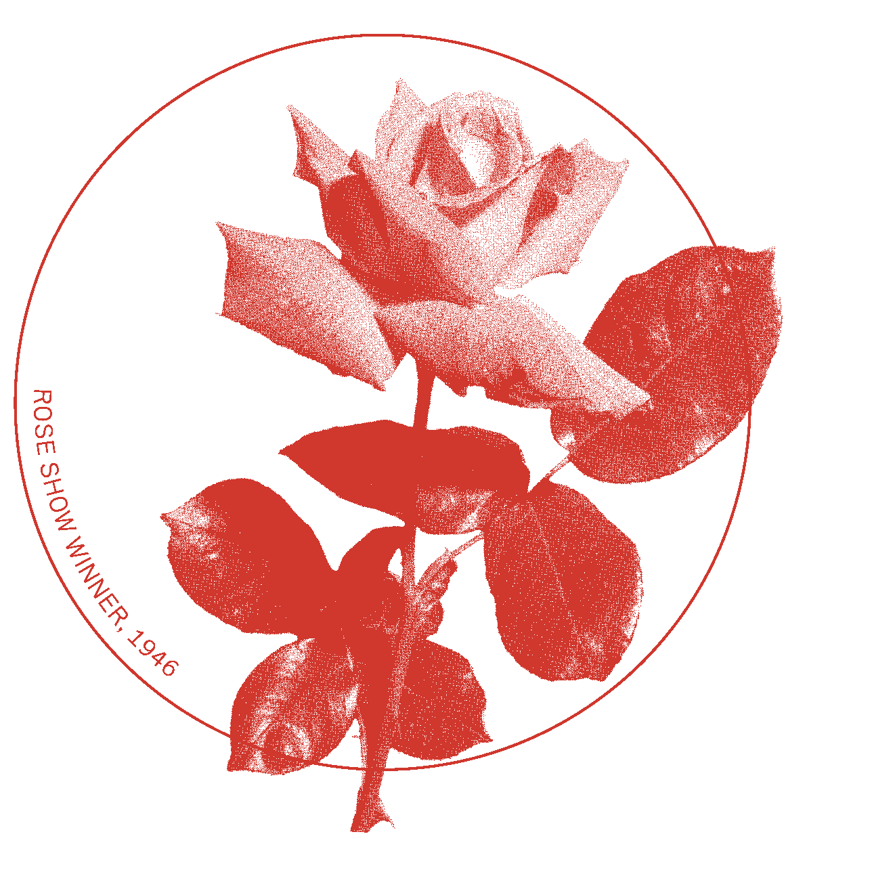
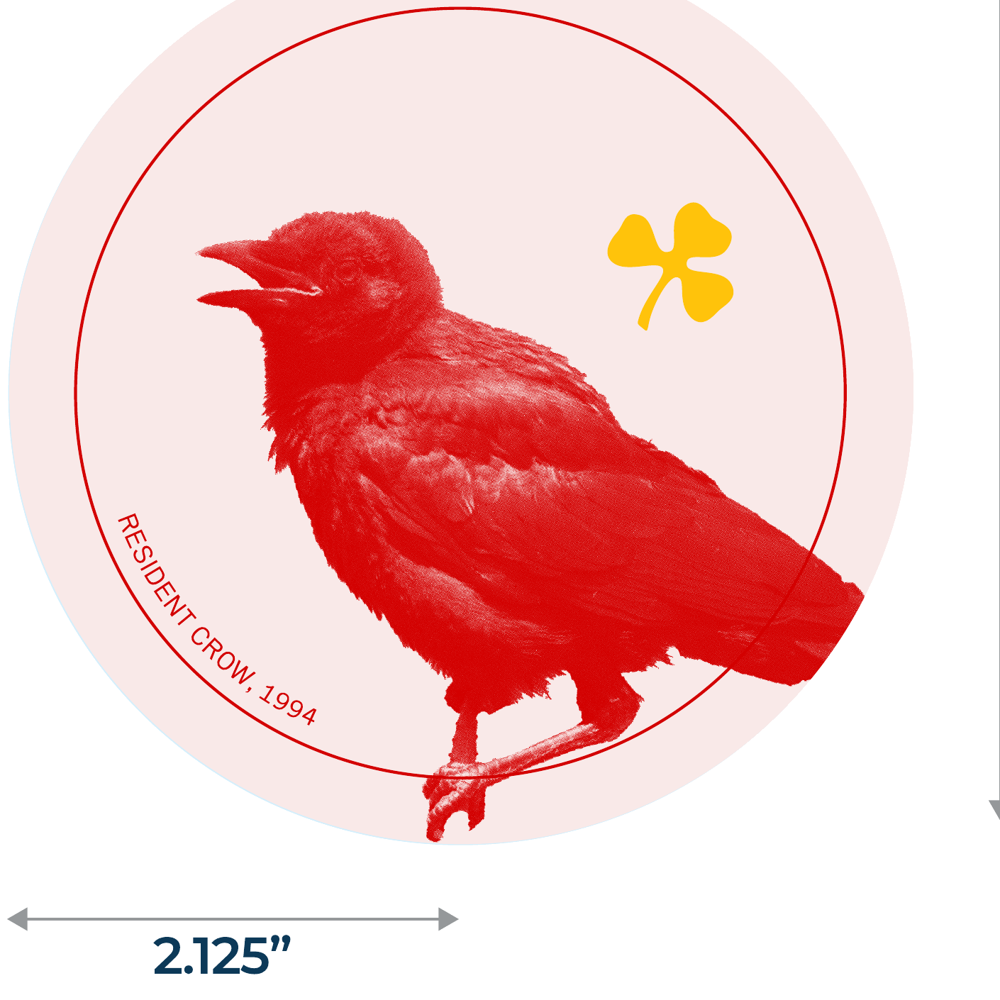
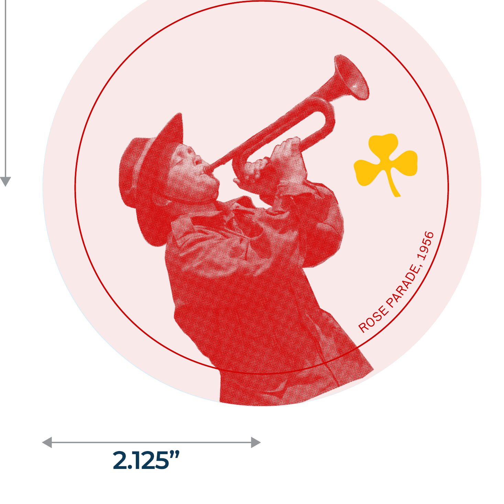
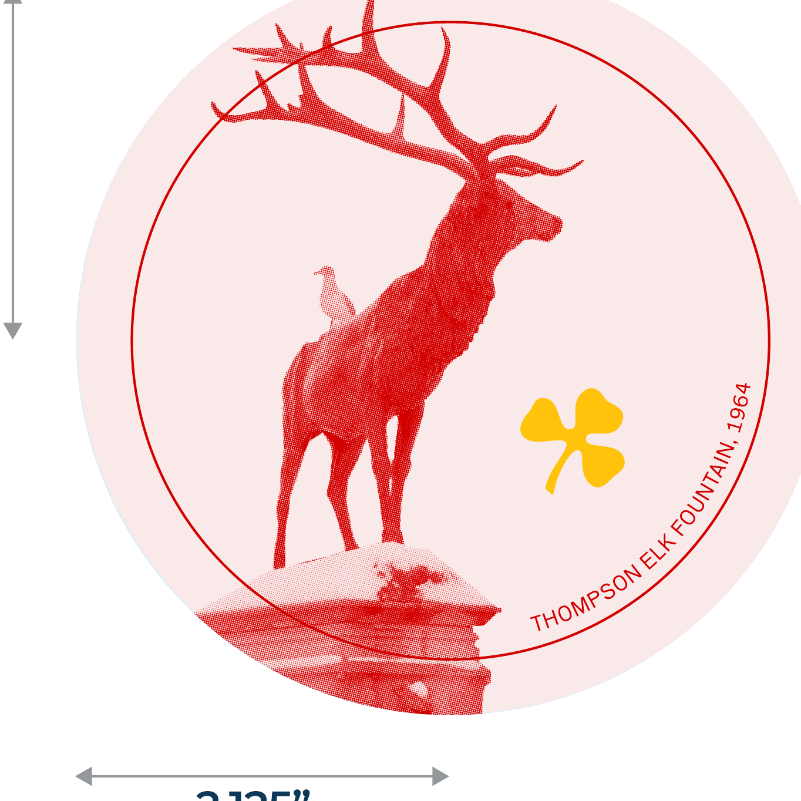
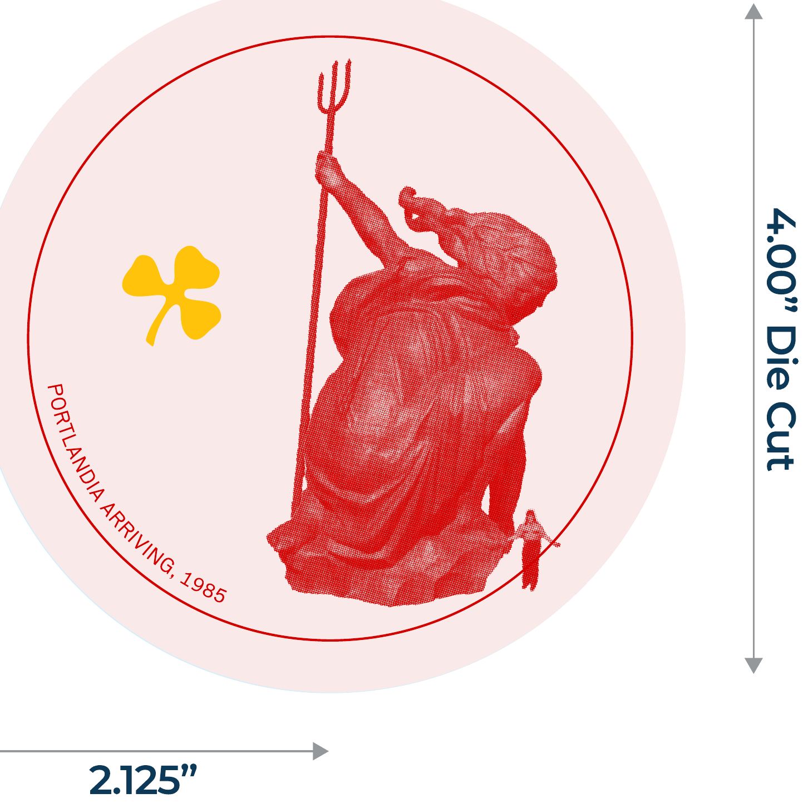

The Rule Breaker in Pearls
Teeta Malarkey never belonged to anyone but herself.
From the salt-soaked edges of the Pacific to the misty shoulders of the Central Cascades, Teeta carved her own way, weathered, wild, and wonderfully untamed. She's the wild grandma your mother kept quiet about. Tough as nails, elegant as pearls. There's grit beneath her glamour, and glamour in her grit.
She never shied from hard work. But come nightfall, she'll raise a glass to a day well spent and boogie the night away. She's the candlelit laughter after a storm, the clink of glasses on a back porch, the sound of heels on a city street. The irreverent matriarch with stories in her eyes and no time for regrets.
Her home was more than four walls. It was a living, breathing maze of memory, and every room told a story. She might give you a tour. You wouldn't leave the same.
The Malarkey is that home, reopened. A Pacific Northwest table built in her image: a little wild, a little glamorous, and always up for one more round.
Tough as nails. Elegant as pearls.
A House of Rooms
Wander far enough and you'll find the coast, the heights, a forest, a hallway full of Portland, and a few characters who never left.

The bar and raw bar. Oysters, towers, cocktails, and a stage.
Resident Crow, 1994
The dining room. White oak, big tables, the long dinner.
Rose Parade, 1956
Deep green and quiet. The hideaway you'll want to stay in.
Thompson Elk Fountain, 1964Private dining, original murals, color turned all the way up.
Rose Show Winner, 1946
The walk between rooms, lined with the city that raised her.
Portlandia Arriving, 1985Some rooms you'll have to find on your own. That's the point.
Ask TeetaJoin the list and we'll send word before the doors open.
You're on the list. We'll be in touch before the doors open.